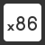
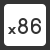

Linux Operating System
 

For the final project of my Computer Systems Engineering Class, my team and I built our own operating system Linux kernel. This was a very challenging and interesting project, and implementing the many features really helped me to understand how modern operating systems function. This OS called "Linu_XP" has the following features:
- CPU Interrupt support
- Virtual Memory and Paging
- Read Only File System
- A Real Time Clock Driver
- Keyboard and Display Drivers
- System Call Support
- Multiple Terminals
- Task Switching
- Support For Scheduling
Checkout out the project's code on github: